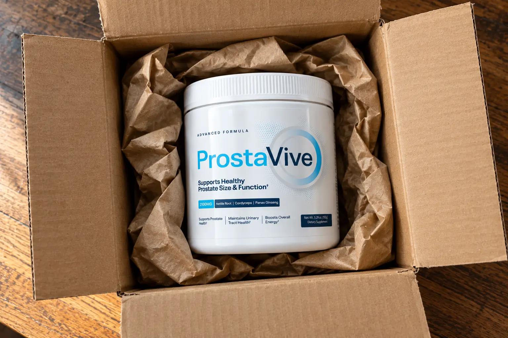
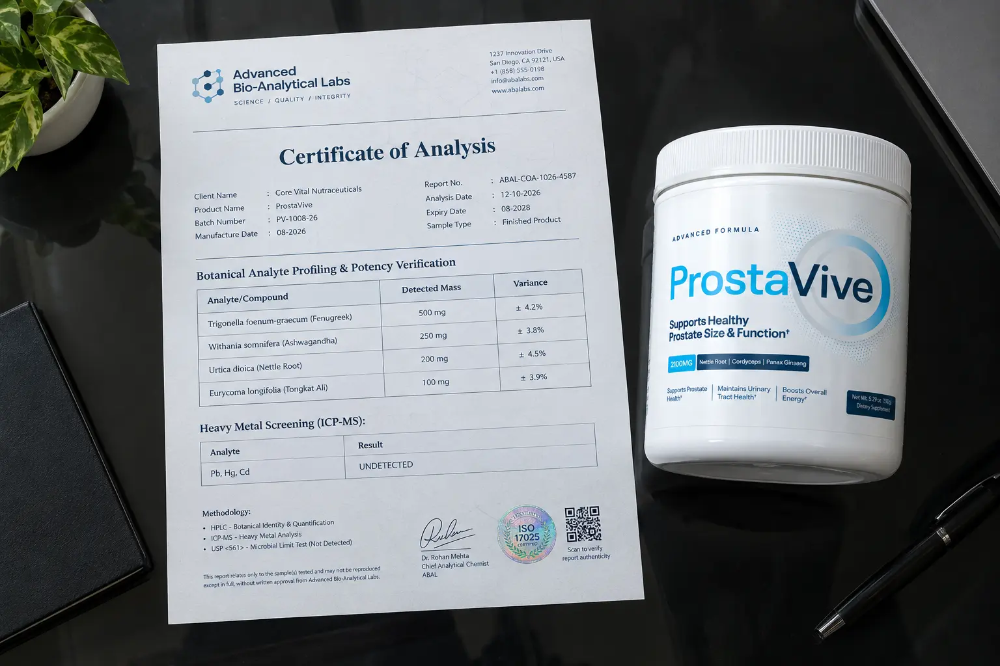

ProstaVive Review (2026): Warning—Read The "Powder vs Capsule" Fake Clone Alert First

Let’s skip the marketing hype about shrinking your prostate overnight.
If you are reading this, you are probably exhausted from waking up multiple times a night to use the bathroom, frustrated by a weak urinary stream, and simply want to know if ProstaVive is worth your money or just another internet scam.
But before we even look at the botanical ingredients, we need to issue a massive consumer warning. There is a sophisticated "clone" network operating online right now. Depending on which website you clicked from Google, you might be buying a cheap 60-day capsule knockoff instead of the official 180-day guarantee powder formula.
I audited the official funnel (prostavive.org) to show you exactly what the real formula looks like, how to avoid the fakes, and the massive transparency secret hidden on their physical label.
📌 TL;DR: The Forensic Verdict
Is ProstaVive a scam? No, provided you purchase the official powder formula from the verified retailer. Unlike 90% of prostate supplements that hide their ingredients in weak "proprietary blends," the real ProstaVive powder actually discloses exact clinical doses on its label (like 500mg Fenugreek and 200mg Nettle Root). Furthermore, the liquid absorption of a powder is vastly superior to swallowing massive, hard-to-digest capsules. While it is not a prescription medicine and cannot "cure" an enlarged prostate, it is a highly transparent botanical support tool backed by ClickBank's iron-clad 180-day (6-month) guarantee.
1. ⚠️ Alert: The "Capsule vs Powder" Fake Clone Network
The prostate health market is flooded with knockoffs. Our research revealed multiple domains aggressively bidding on the ProstaVive name, but selling entirely different products and terms.
The Domain Audit Checklist
Here is what you need to know before handing over your credit card:
- Prostavive.org (THE OFFICIAL OFFER): This is the official landing page. It sells a Powder to be mixed with water, and offers a massive 180-Day Money-Back Guarantee.
- Protavive.com & Prostive.com (THE KNOCKOFFS): These similarly named domains sell a Capsule/Pill format with a completely different formula, and heavily restrict the refund window down to just 60 days.
If you see a website trying to sell you ProstaVive in a capsule format, close the tab immediately. You are not getting the verified, clinically-dosed formula.
2. Why A Powder Beats Traditional Prostate Pills
Once you secure the official powder formula, it actually presents a massive physiological advantage over the competitors.
Most prostate supplements (like Saw Palmetto extracts) require you to swallow 2 to 3 giant, chalky capsules every morning. As men age past 50, digestive acid naturally decreases. This means hard capsules often pass through the digestive tract only partially broken down, flushing expensive ingredients down the toilet.
Because the real ProstaVive is a water-soluble powder, it bypasses the need for harsh stomach acid breakdown. The botanicals and minerals are rapidly absorbed into the bloodstream via liquid intake, offering significantly higher bioavailability.
3. The Physical Label Audit: Exact Doses Revealed
One of the biggest scams in the supplement industry is the "Proprietary Blend"—a legal loophole where companies list ingredients but hide the actual amounts to save money. We expected ProstaVive to do the same.

🔬 Verified Exact Dosages (Per 4.93g Scoop)
We were genuinely shocked by the transparency of the physical label. Instead of hiding the active compounds, ProstaVive lists exact milligram (mg) doses for almost every major ingredient:
| Botanical / Compound | Scientific Function | Exact Dose Disclosed |
|---|---|---|
| Fenugreek Powder (seed) | Studied for supporting healthy testosterone levels and vitality. | Disclosed: 500 mg |
| Artichoke Extract (5% Cynarin) | Rich in antioxidants, supports liver function and toxin removal. | Disclosed: 300 mg |
| Ashwagandha Extract | Helps lower cortisol, which can indirectly reduce bladder muscle tension. | Disclosed: 250 mg |
| Maca Root & Cordyceps | Adaptogens used to combat physical fatigue and support stamina. | Disclosed: 250 mg (Each) |
| Urtica dioica (Stinging Nettle Root) | A staple in prostate health, researched for supporting healthy urinary flow. | Disclosed: 200 mg |
| Eurycoma longifolia (Tongkat Ali) | A premium adaptogen for supporting male hormone balance. | Disclosed: 100 mg |
Note: The formula also contains fully disclosed doses of Vitamin D3 (50mcg), Zinc (12mg), and Magnesium (50mg). Only a minor 200mg fruit/vegetable powder blend is listed as proprietary. This level of transparency is rare and highly commendable.
4. Real Pricing & The 180-Day Guarantee
The pricing for ProstaVive can be confusing due to the clone sites. The official verified checkout through ClickBank displays the following structure:
- 1 Bottle (30-Day Supply): $69.00 + Shipping
- 3 Bottles (90-Day Supply): $177.00 Total ($59 per bottle)
- 6 Bottles (180-Day Supply): $294.00 Total ($49 per bottle) + Free US Shipping
The Ultimate Safety Net: The greatest advantage of securing the official powder is the 180-Day Guarantee. Because ClickBank handles the transaction, you have a full 6 months to evaluate the product. If your nighttime bathroom trips haven't reduced after 4 or 5 months, you can request a refund directly from ClickBank, removing the financial risk.
Secure the Official Powder Formula & The 180-Day Guarantee Below:
Go To The Official ProstaVive Checkout >>5. Financial Verdict: Should You Buy It?
ProstaVive is not a prescription medicine like Flomax. If you have severe benign prostatic hyperplasia (BPH) or blood in your urine, you need to see a urologist immediately.
🛡️ Our Purchasing Recommendation
However, if you are experiencing the frustrating, mild symptoms of an aging prostate—waking up at 2 AM and 4 AM, and dealing with a weak stream—the official ProstaVive powder is one of the most transparent investments on the market.
It avoids the terrible absorption issues of giant capsules by using a highly bioavailable liquid-mix powder. Furthermore, because they actually disclose their exact dosages (like 500mg of Fenugreek and 200mg of Nettle Root), you know you aren't being scammed by a weak proprietary blend.
As long as you avoid the fake capsule clones and use the secure link below to get the 180-day guarantee, you have 6 full months to test the urinary flow results completely risk-free.
Secure The Official Powder Formula Here >>